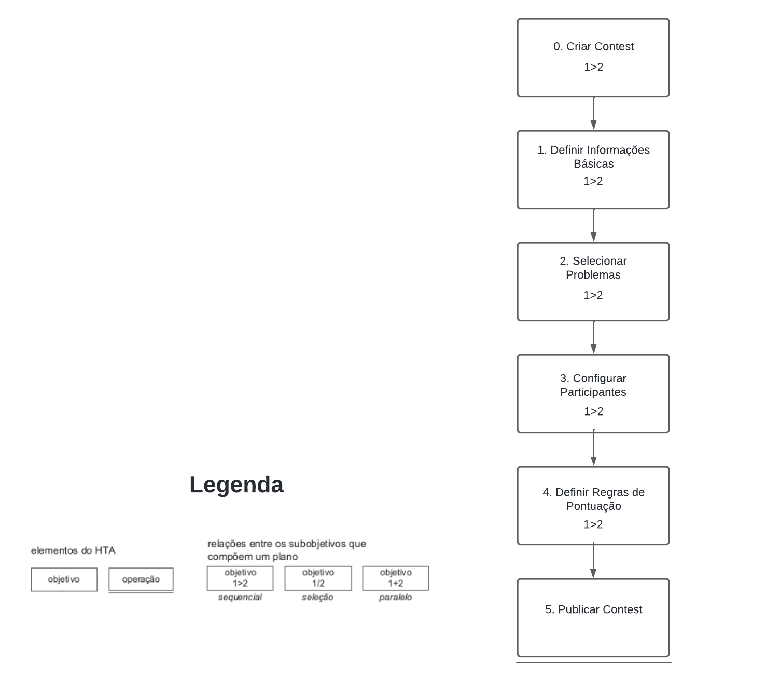

Análise Hierárquica de Tarefas (HTA)
Introdução
A Análise Hierárquica de Tarefas (HTA) é uma técnica de análise que decompõe uma tarefa complexa em uma estrutura hierárquica de metas, submetas e procedimentos. Essa abordagem ajuda a esclarecer como uma tarefa é executada e identifica áreas que precisam de melhorias. A HTA é frequentemente aplicada em uma variedade de áreas, incluindo desenvolvimento de produtos, serviços e otimização de processos. Para visualizar a análise, pode-se usar diagramas ou tabelas, detalhados na representação gráfica exemplificada na figura 1.
Figura 1 - Notação diagrama HTA.

Fonte: BARBOSA e SILVA, 2021, p.179.1
Análise de Tarefas
No que diz respeito às tarefas para análise com o método HTA, foram escolhidas a criação de problemas e contests, o login e a submissão de respostas, conforme explicitado nas figuras de 2 a 7 e nas tabelas de 1 a 6.
1. Submissão de Problema
Nesta tarefa, o usuário tem o objetivo de submeter uma solução para um problema de programação. Abaixo estão o diagrama e a tabela HTA desta tarefa.
Figura 2 - Diagrama HTA de Submissão de Problemas.

Fonte: João Artur.
Tabela 1 - Tabela HTA de Submissão de Problema
| Objetivos/Operações | Problemas e Recomendações |
|---|---|
| 0. Submeter solução | |
| 1. Selecionar problema | Input: Usuário escolhe o problema a partir da lista. Feedback: Detalhes do problema são exibidos. |
| 2. Escrever código | Input: Usuário escreve solução no editor integrado. Feedback: Realce de sintaxe e erros de compilação em tempo real. |
| 3. Testar código | Input: Usuário executa testes locais. Feedback: Resultados dos testes exibidos. |
| 4. Submeter solução | Input: Usuário clica em 'Submeter'. Feedback: Solução é enviada para avaliação. |
| 5. Receber feedback | Feedback: Resultados da avaliação (correto, erro de execução, tempo excedido, etc.). |
Fonte: João Artur.
2. Tutorial de Resolução de Questões Pós-Contest
Nesta tarefa, o usuário ou administrador fornece um passo a passo detalhado das soluções para os problemas apresentados após o fim de um contest. Esta atividade é essencial para o aprendizado e aprimoramento das habilidades de programação dos participantes. Abaixo estão o diagrama e a tabela HTA desta tarefa.
Figura 3 - Diagrama HTA de Tutorial de Resolução de Questões Pós-Contestt.

Fonte: João Artur.
Tabela 2 - Tabela HTA de Tutorial de Resolução de Questões Pós-Contest
| Objetivos/Operações | Problemas e Recomendações |
|---|---|
| 0. Acessar soluções pós-contest | |
| 1. Selecionar o contest encerrado | Input: Usuário acessa a lista de contests encerrados. Feedback: Lista de contests com seus respectivos problemas e soluções disponíveis é exibida. |
| 2. Escolher problema para revisar | Input: Usuário escolhe um problema específico para aprender a solução. Feedback: Detalhes do problema e soluções passo a passo são disponibilizados. |
| 3. Estudar a solução | Feedback: Usuário segue o tutorial que explica cada parte da solução, incluindo as técnicas utilizadas, lógica de programação e otimizações possíveis. |
| 4. Acessar discussões e comentários | Input: Usuário pode participar de fóruns ou seções de comentários para discutir a solução e tirar dúvidas. Feedback: Comunicação com outros usuários para aprofundamento do entendimento. |
Fonte: João Artur.
3. Verificação de Submissões
Nesta tarefa, o usuário ou o administrador verifica o resultado das submissões feitas durante um contest. Abaixo estão o diagrama e a tabela HTA desta tarefa.
Figura 4 - Diagrama HTA de Verificação de Submissões.

Fonte: João Artur.
Tabela 3 - Tabela HTA de Verificação de Submissões
| Objetivos/Operações | Problemas e Recomendações |
|---|---|
| 0. Verificar submissões | |
| 1. Acessar lista de submissões | Input: Usuário ou administrador acessa a lista de submissões do contest. Feedback: Lista de submissões exibida. |
| 2. Analisar resultado | Input: Seleção de uma submissão específica. Feedback: Detalhes do resultado da submissão (correto, erro, tempo excedido, etc.). |
| 3. Verificar logs de execução | Input: Acesso aos logs de execução para detalhamento de erros. Feedback: Logs exibidos para diagnóstico. |
Fonte: João Artur.
4. Ranking de Contest
Esta tarefa aborda como os resultados dos participantes são calculados e exibidos em forma de ranking durante ou após um contest. Abaixo estão o diagrama e a tabela HTA desta tarefa.
Figura 5 - Diagrama HTA de Ranking de Contest.

Fonte: João Artur.
Tabela 4 - Tabela HTA de Ranking de Contest
| Objetivos/Operações | Problemas e Recomendações |
|---|---|
| 0. Exibir ranking | |
| 1. Calcular pontos | Input: Sistema processa os resultados das submissões. Feedback: Pontuação calculada com base em critérios predefinidos. |
| 2. Ordenar resultados | Input: Sistema ordena participantes com base na pontuação e outros critérios. Feedback: Ranking atualizado e exibido. |
| 3. Exibir detalhes | Input: Usuário acessa detalhes de performance individual e comparações. Feedback: Detalhes exibidos incluem tempo de submissão, número de tentativas, etc. |
| 4. Atualizar ranking em tempo real | Input: Sistema atualiza o ranking conforme novas submissões são processadas. Feedback: Ranking dinâmico e sempre atualizado. |
Fonte: João Artur.
5. Criação de Problema (Administrador)
Nesta tarefa, o administrador cria e configura novos problemas para os usuários resolverem. Abaixo estão o diagrama e a tabela HTA desta tarefa.
Figura 6 - Diagrama HTA de Criação de Problema.

Fonte: João Artur.
Tabela 5 - Tabela HTA de Criação de Problema
| Objetivos/Operações | Problemas e Recomendações |
|---|---|
| 0. Criar problema | |
| 1. Definir enunciado | Input: Administrador escreve o enunciado. Feedback: Pré-visualização do texto. |
| 2. Configurar testes | Input: Entradas e saídas esperadas são definidas. Feedback: Testes salvos para validação. |
| 3. Definir restrições | Input: Limites de tempo e memória. Feedback: Restrições registradas no sistema. |
| 4. Publicar problema | Input: Clique em 'Publicar'. Feedback: Problema disponível para usuários. |
Fonte: João Artur.
6. Criação de Contest (Administrador)
Nesta tarefa, o administrador organiza competições (contests) que agregam diversos problemas para serem resolvidos pelos participantes dentro de um tempo definido. Abaixo estão o diagrama e a tabela HTA desta tarefa.
Figura 7 - Diagrama HTA de Criação de Contest.

Fonte: João Artur.
Tabela 6 - Tabela HTA de Criação de Contest
| Objetivos/Operações | Problemas e Recomendações |
|---|---|
| 0. Criar contest | |
| 1. Definir informações básicas | Input: Nome, duração e tipo de acesso (público ou privado). Feedback: Informações registradas. |
| 2. Selecionar problemas | Input: Escolher problemas da biblioteca ou criar novos. Feedback: Problemas adicionados ao contest. |
| 3. Configurar participantes | Input: Definir se o contest é aberto a todos ou apenas por convite. Feedback: Configuração salva. |
| 4. Definir regras de pontuação | Input: Estabelecer critérios de pontuação e penalidades. Feedback: Regras estabelecidas para o contest. |
| 5. Publicar contest | Input: Clique em 'Publicar'. Feedback: Contest disponível para inscrição ou participação direta. |
Fonte: João Artur.
Bibliografia
1.Barbosa, S. D. J.; Silva, B. S. da; Silveira, M. S.; Gasparini, I.; Darin, T.; Barbosa, G. D. J. (2021)Interação Humano-Computador e Experiência do usuário.
Histórico de Versão
| Versão | Data | Data Prevista de Revisão | Descrição | Autor(es) | Revisor(es) |
|---|---|---|---|---|---|
1.0 |
13/04/2024 | 20/04/2024 | Criação da página de Análise Hierárquica de Tarefas. | João Artur | Diego Sousa |
1.1 |
21/04/2024 | 23/04/2024 | Adicionando imagem dos diagramas. | João Artur | Diego Sousa |